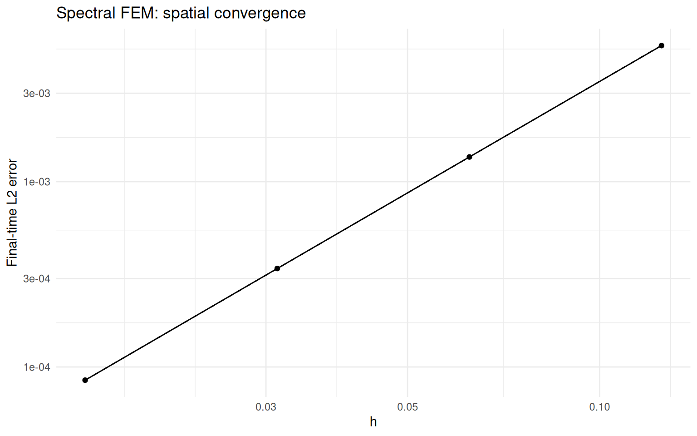
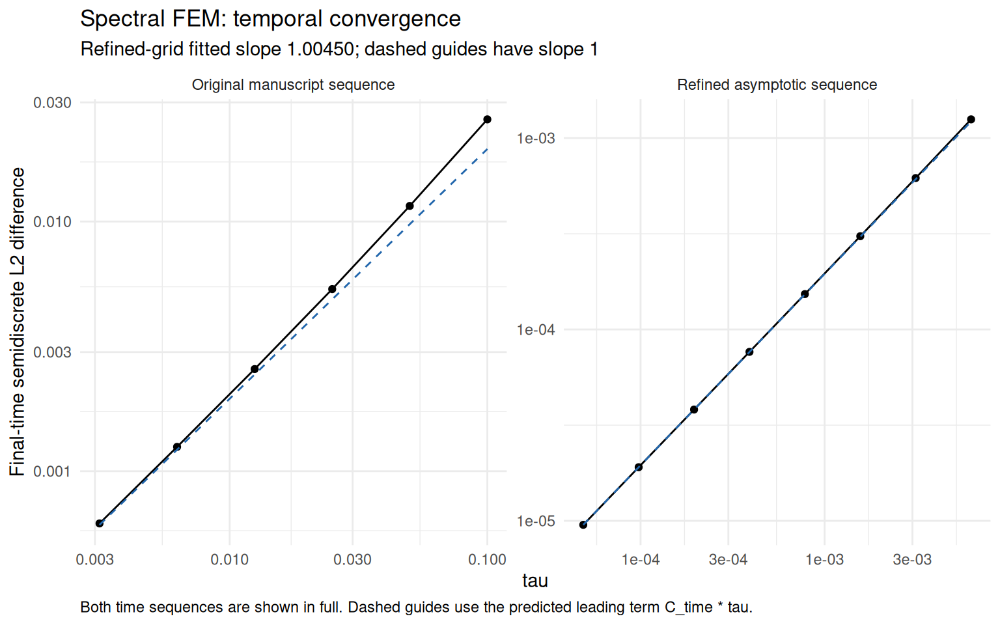
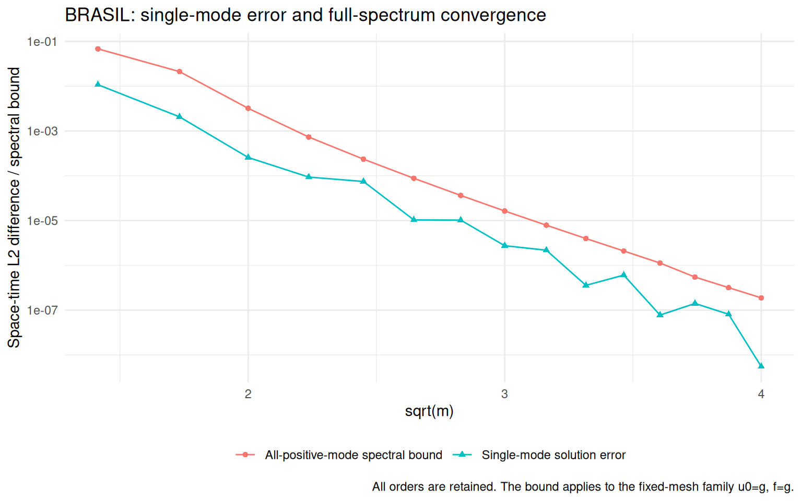
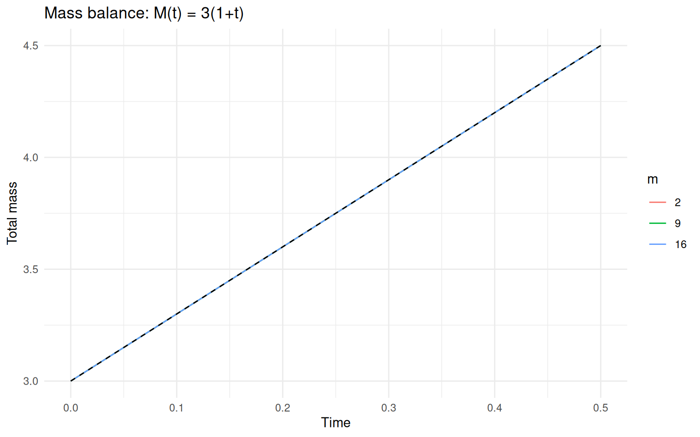

Zero-shift theory · m · h · tau · rough h
This is the ninth experiment notebook. It keeps the nonzero-mean data
separate from the four mean-zero true_diff_* convergence
studies. The spatial table, original temporal table, and experiment C
reproduce Section sec:zero-shift-test of
Numerical_fractional_diffusion_IMAJNA_kappa0.tex. The
refined temporal sequence and experiment B provide additional numerical
evidence. The original four positive-shift notebooks remain
unchanged.
Run setup, parameters, and the computation chunk manually. Knit
afterward to read the saved result and draw tables and figures. The
computation chunk has eval=FALSE; missing or incompatible
results stop knitting instead of launching an experiment. No global
profile or recompute option changes this behavior. Internal
implementation tests and refinement audits are stored in
/home/rierasl/Desktop/DOCS/NAP/true_diff_internal and are
not executed by this notebook.
knitr::opts_chunk$set(message=FALSE,warning=TRUE,error=FALSE,cache=FALSE,
dev="png",fig.width=8,fig.height=5)
if(!requireNamespace("ggplot2",quietly=TRUE)) stop("Install ggplot2 for the figures.")All physical and numerical settings are explicit. Unlike the four
mean-zero convergence studies, this benchmark intentionally uses
u0 = f = 1 + phi. The forcing is constant in time and has
spatial mean 1.
alpha <- 1.2
T_final <- 0.5
diffusion <- 1
kappa <- 0
gamma_star <- 1/3
spatial_h <- 1/c(8,16,32,64)
spatial_tau <- 1e-6
temporal_h <- 1/32
temporal_paper_N <- c(5L,10L,20L,40L,80L,160L)
# Refined sequence for the first-order asymptotic regime (same PDE and h).
temporal_N <- as.integer(80L*2^(0:7))
rational_h <- 1/32
rational_tau <- 0.01
m_vector <- 2:16
continuity_h <- 1/32
continuity_tau <- 1e-6
kappa_vector <- c(0,1e-4,1e-2)
output_file <- "data_files/true_diff_zero_shift_benchmark.rds"
figure_dir <- "data_files/true_diff_zero_shift_benchmark"
settings <- list(alpha=alpha,T_final=T_final,diffusion=diffusion,kappa=kappa,
gamma_star=gamma_star,spatial_h=spatial_h,spatial_tau=spatial_tau,
temporal_h=temporal_h,temporal_N=temporal_N,temporal_paper_N=temporal_paper_N,
rational_h=rational_h,
rational_tau=rational_tau,m_vector=m_vector,continuity_h=continuity_h,
continuity_tau=continuity_tau,kappa_vector=kappa_vector)
knitr::kable(data.frame(parameter=names(settings),
value=vapply(settings,function(x) paste(x,collapse=", "),character(1))))| parameter | value | |
|---|---|---|
| alpha | alpha | 1.2 |
| T_final | T_final | 0.5 |
| diffusion | diffusion | 1 |
| kappa | kappa | 0 |
| gamma_star | gamma_star | 0.333333333333333 |
| spatial_h | spatial_h | 0.125, 0.0625, 0.03125, 0.015625 |
| spatial_tau | spatial_tau | 1e-06 |
| temporal_h | temporal_h | 0.03125 |
| temporal_N | temporal_N | 80, 160, 320, 640, 1280, 2560, 5120, 10240 |
| temporal_paper_N | temporal_paper_N | 5, 10, 20, 40, 80, 160 |
| rational_h | rational_h | 0.03125 |
| rational_tau | rational_tau | 0.01 |
| m_vector | m_vector | 2, 3, 4, 5, 6, 7, 8, 9, 10, 11, 12, 13, 14, 15, 16 |
| continuity_h | continuity_h | 0.03125 |
| continuity_tau | continuity_tau | 1e-06 |
| kappa_vector | kappa_vector | 0, 1e-04, 0.01 |
The connected tadpole has a stem of length 1 and a loop parameterized by \(x\in[0,2]\). Let \(\phi=0\) on the stem and \(\phi(x)=\sin(2\pi x)\) on the loop. Then \(\int_\Gamma\phi=0\), \(\|\phi\|_{L_2}=1\), and \(-\Delta_\Gamma\phi=(2\pi)^2\phi\). With \(u_0=f=1+\phi\) and zero shift, \[ u(s,t)=1+t+\left(e^{-at}+\frac{1-e^{-at}}a\right)\phi(s), \qquad a=\nu(2\pi)^\alpha,\qquad M(t)=3(1+t). \] Consistent P1 mass and stiffness matrices are assembled with both loop endpoints identified at the junction. Initial and forcing data use \(L_2\) projection; ten-point Gauss–Legendre quadrature on every interval assembles the smooth loads and evaluates the continuous final-time error. The known zero integral of the phi load is enforced only at quadrature roundoff. No continuous eigenpair is used to advance the numerical solution.
This manual chunk is the only action that computes or overwrites the benchmark result. It does not run the separate internal test suite.
for(package in c("Matrix","rSPDE"))
if(!requireNamespace(package,quietly=TRUE)) stop("Missing package: ",package)
true_diff <- local({
extracted <- tempfile("true_diff_benchmark_",fileext=".R")
on.exit(unlink(extracted),add=TRUE)
knitr::purl("kappa0func.Rmd",output=extracted,quiet=TRUE,documentation=0L)
functions <- new.env(parent=globalenv())
sys.source(extracted,envir=functions)
functions
})
result <- true_diff$kappa0_compute_benchmark(settings,
"true_diff_zero_shift_benchmark.Rmd",output_file)if(!file.exists(output_file)) stop("Saved benchmark results are missing. Run setup, parameters, and recompute manually, then knit.")
result <- readRDS(output_file)
mismatch <- names(settings)[!vapply(names(settings),function(name)
isTRUE(all.equal(settings[[name]],result$parameters[[name]],tolerance=1e-12)),logical(1))]
if(length(mismatch)) stop("Saved benchmark settings differ for: ",paste(mismatch,collapse=", "),
". Run the recompute chunk manually, then knit.")
cat("Generated:",result$generated_at,"\nComputation seconds:",result$elapsed_seconds,"\n")## Generated: 2026-11-22 12:57:58 +03
## Computation seconds: 0.652dir.create(figure_dir,recursive=TRUE,showWarnings=FALSE)Use the complete generalized eigensystem \(GV=CV\Lambda\), \(V^TCV=I\), with the known constant vector and exactly zero constant eigenvalue. All positive discrete eigenpairs are retained. The fractional power is exact in this discrete spectrum, with no rational approximation.
For autonomous forcing, the mode with decay rate \(d\) has the BE value \[
y^N=(1+\tau d)^{-N}y^0+
\frac{1-(1+\tau d)^{-N}}d\,g.
\] At \(d=0\), the forcing
multiplier is \(T=N\tau\). Evaluating
this closed recurrence gives the same BE solution as repeating every
step, and makes the manuscript’s \(\tau=10^{-6}\) affordable without dense
time marching. log1p and expm1 avoid
cancellation near zero.
Spatial errors below compare with the continuous exact solution at
\(T\). Temporal errors compare with
exact semidiscrete evolution at the same \(h\), separating time error from spatial
error. The manuscript’s six time steps are retained in a separate table.
The temporal plot separates the original and refined ranges. The fitted
slope uses the explicit refined sequence N=80,…,10240: the coarse
original sequence started at tau=0.1, where the excited mode’s decay
rate times tau is about 0.91, outside the small-step asymptotic regime.
The local rates approach one under refinement, and
error_per_tau approaches a constant. No points are deleted
from the original reproduction table. Refining time against a continuous
reference instead would eventually reveal spatial error; that is
deliberately excluded from this isolated temporal comparison. The
expected limiting rates are two and one, respectively. The absolute mass
error at zero shift is measured against \(3(1+T)\).
For an autonomous positive mode with rate a_j, initial coefficient c_j and forcing coefficient g_j, the final-time temporal difference is \[ (c_j-g_j/a_j)\left[(1+\tau a_j)^{-T/\tau}-e^{-Ta_j}\right]. \] Its leading term is proportional to tau. Mass-orthonormality therefore predicts the constant in E_tau ~ C_time*tau: \[ C_{\rm time}=\frac T2\left(\sum_{j\ge2} |(c_j-g_j/a_j)a_j^2e^{-Ta_j}|^2\right)^{1/2}. \] The dashed temporal guide uses this computed analytical constant, not a fit to the error values. The table also compares E_tau/tau with C_time. The zero mode is exact and has no contribution to this temporal difference.
knitr::kable(result$spatial,digits=12,caption="Spectral FEM spatial convergence; no rational error")| h | error | mass_error | tau | rate |
|---|---|---|---|---|
| 0.125000 | 5.423418e-03 | 0 | 1e-06 | NA |
| 0.062500 | 1.359144e-03 | 0 | 1e-06 | 1.996504 |
| 0.031250 | 3.399033e-04 | 0 | 1e-06 | 1.999502 |
| 0.015625 | 8.486474e-05 | 0 | 1e-06 | 2.001887 |
knitr::kable(result$temporal_paper[,c("tau","N","error","mass_error","rate")],digits=12,
caption="Original manuscript time sequence, retained for comparison")| tau | N | error | mass_error | rate |
|---|---|---|---|---|
| 0.100000 | 5 | 0.0256443445 | 0 | NA |
| 0.050000 | 10 | 0.0115451640 | 0 | 1.151352 |
| 0.025000 | 20 | 0.0053616127 | 0 | 1.106550 |
| 0.012500 | 40 | 0.0025648013 | 0 | 1.063820 |
| 0.006250 | 80 | 0.0012516435 | 0 | 1.035023 |
| 0.003125 | 160 | 0.0006179081 | 0 | 1.018359 |
knitr::kable(result$temporal,digits=12,
caption="Refined isolated temporal convergence: asymptotic first-order regime")| tau | N | error | mass_error | rate | error_per_tau |
|---|---|---|---|---|---|
| 6.250000e-03 | 80 | 1.251643e-03 | 0 | NA | 0.2002630 |
| 3.125000e-03 | 160 | 6.179081e-04 | 0 | 1.018359 | 0.1977306 |
| 1.562500e-03 | 320 | 3.069474e-04 | 0 | 1.009401 | 0.1964463 |
| 7.812500e-04 | 640 | 1.529685e-04 | 0 | 1.004757 | 0.1957996 |
| 3.906250e-04 | 1280 | 7.635748e-05 | 0 | 1.002393 | 0.1954751 |
| 1.953125e-04 | 2560 | 3.814700e-05 | 0 | 1.001200 | 0.1953126 |
| 9.765625e-05 | 5120 | 1.906555e-05 | 0 | 1.000601 | 0.1952313 |
| 4.882813e-05 | 10240 | 9.530791e-06 | 0 | 1.000301 | 0.1951906 |
knitr::kable(result$temporal_fit,digits=8,caption="Fit over all refined temporal points")| reference | observed | N_min | N_max | asymptotic_error_constant | finest_error_per_tau | finest_ratio_relative_gap |
|---|---|---|---|---|---|---|
| 1 | 1.004503 | 80 | 10240 | 0.1951499 | 0.1951906 | 0.00020854 |
space <- result$spatial
space$guide <- exp(mean(log(space$error)-2*log(space$h)))*space$h^2
p_space <- ggplot2::ggplot(space,ggplot2::aes(h,error))+
ggplot2::geom_line()+ggplot2::geom_point()+ggplot2::geom_line(ggplot2::aes(y=guide),linetype="dashed")+
ggplot2::scale_x_log10()+ggplot2::scale_y_log10()+
ggplot2::labs(x="h",y="Final-time L2 error",title="Spectral FEM: spatial convergence")+
ggplot2::theme_minimal()
time <- result$temporal
time$guide <- result$temporal_fit$asymptotic_error_constant*time$tau
paper_time <- result$temporal_paper
paper_time$guide <- result$temporal_fit$asymptotic_error_constant*paper_time$tau
paper_time$sequence <- "Original manuscript sequence"
time$sequence <- "Refined asymptotic sequence"
plot_time <- rbind(paper_time,time)
plot_time$sequence <- factor(plot_time$sequence,
levels=c("Original manuscript sequence","Refined asymptotic sequence"))
p_time <- ggplot2::ggplot(plot_time,ggplot2::aes(tau,error))+
ggplot2::geom_line()+ggplot2::geom_point()+
ggplot2::geom_line(ggplot2::aes(y=guide),linetype="dashed",colour="#2166ac")+
ggplot2::facet_wrap(~sequence,scales="free",nrow=1)+
ggplot2::scale_x_log10()+ggplot2::scale_y_log10()+
ggplot2::labs(x="tau",y="Final-time semidiscrete L2 difference",
title="Spectral FEM: temporal convergence",
subtitle=sprintf("Refined-grid fitted slope %.5f; dashed guides have slope 1",result$temporal_fit$observed),
caption="Both time sequences are shown in full. Dashed guides use the predicted leading term C_time * tau.")+
ggplot2::theme_minimal()+ggplot2::theme(plot.caption=ggplot2::element_text(hjust=0))
print(p_space);print(p_time)

ggplot2::ggsave(file.path(figure_dir,"spectral_spatial.pdf"),p_space,width=8,height=5)
ggplot2::ggsave(file.path(figure_dir,"spectral_temporal.pdf"),p_time,width=8,height=5)This is an additional experiment beyond the manuscript’s spectral table. At fixed h and tau, advance each BRASIL trajectory through every backward Euler step and compare it with exact-discrete BE using the same initial projection, load, mesh, and time grid. The reported rational error is \[ E_m^2=\tau\sum_{k=1}^N (U_h^k-U_{h,m}^k)^TC(U_h^k-U_{h,m}^k). \] It includes neither continuous spatial nor temporal discretization error. The final-time discrete difference is reported separately. The constant mode is restored using its exact discrete mean recurrence, so at every node the mass should be \(3(1+t_k)\), independently of m. Here mass grows because of the forcing; the quantity being verified is mass balance.
The dedicated isolated-m convergence study uses the richer 16-mode initial data and remains the main solution-level rational convergence experiment. This single-mode benchmark verifies its particular evolution and mass balance; the additional spectral bound below measures approximation quality over the wider discrete spectrum.
On this aligned uniform mesh, the projected sine excites one positive eigenvalue, possibly represented by two rotated eigenvectors in its repeated eigenspace. Thus the rational solution error probes the BRASIL approximation at essentially one argument \(x_\phi=\gamma_*/\lambda_{\phi,h}\approx0.008416\). As m changes, the approximant’s error extrema and zeros change around this fixed spectral sampling point. Its pointwise error can increase at an individual order even though the overall approximation improves. The original sparse trajectory and the independent full-modal calculation agree at about \(3\times10^{-14}\) in the diagnosed run: the wiggles are not a failure of the sparse stepping or mass split.
We retain all solution-error points and gamma*=1/3. An internal sweep of admissible scales 1/3, 1, and pi^2/4 confirmed that a tighter scale does not remove single-point oscillations or improve every individual order. The physical benchmark data are unchanged. The following spectral diagnostic makes the broader rational convergence visible without changing the data or filtering orders.
For each positive FEM eigenvalue, write \[ a_j=\nu\lambda_{j,h}^{\alpha/2},\quad \widehat a_{j,m}=\frac{\nu\gamma_*^{\alpha/2}} {S_m(\lambda_{j,h}/\gamma_*)},\quad q_j=(1+\tau a_j)^{-1},\quad H_{j,m}=(1+\tau\widehat a_{j,m})^{-1}. \] For the fixed-mesh family with initial coefficients g and autonomous forcing coefficients g, define the unit modal responses \[ z_j^k=q_j^k+\frac{1-q_j^k}{a_j},\qquad \widehat z_{j,m}^k=H_{j,m}^k+ \frac{1-H_{j,m}^k}{\widehat a_{j,m}}. \] Mass-orthonormality gives the exact finite-dimensional induced norm \[ B_m=\max_{j\ge2}\left(\tau\sum_{k=1}^N |z_j^k-\widehat z_{j,m}^k|^2\right)^{1/2}. \] It examines all positive discrete modes instead of the single excited eigenvalue. In exact arithmetic the physical benchmark satisfies \(E_m\le\|P_h\phi\|_C B_m\). This is a bound for this discrete initial/forcing family, not for arbitrary time-dependent forcing or the continuum error. The constant component is exact and contributes zero to both differences.
modal_error uses the actual projected initial and
forcing coefficients; it is an independent evaluation of the same E_m as
the sparse trajectory. sampled_source_uniform_error is a
sampled maximum of \(|r_m(x)-x^{\alpha/2}|\) on [0,1], including
zero. It is an approximation diagnostic, not a certified continuous
supremum. Monotonicity of B_m is an observation for these parameters,
not an imposed constraint or theorem.
knitr::kable(result$rational[,c("m","error","modal_error","sparse_modal_disagreement",
"final_error","max_mass_error","resolved")],digits=14,
caption="All single-mode solution errors and their independent modal verification")| m | error | modal_error | sparse_modal_disagreement | final_error | max_mass_error | resolved |
|---|---|---|---|---|---|---|
| 2 | 1.079675e-02 | 1.079675e-02 | 1e-14 | 8.254827e-03 | 3e-14 | TRUE |
| 3 | 2.073225e-03 | 2.073225e-03 | 1e-14 | 1.640099e-03 | 3e-14 | TRUE |
| 4 | 2.562169e-04 | 2.562169e-04 | 1e-14 | 2.014475e-04 | 2e-14 | TRUE |
| 5 | 9.346546e-05 | 9.346546e-05 | 1e-14 | 7.351771e-05 | 3e-14 | TRUE |
| 6 | 7.449943e-05 | 7.449943e-05 | 1e-14 | 5.862548e-05 | 3e-14 | TRUE |
| 7 | 1.033636e-05 | 1.033636e-05 | 1e-14 | 8.132117e-06 | 2e-14 | TRUE |
| 8 | 1.023493e-05 | 1.023493e-05 | 1e-14 | 8.052322e-06 | 3e-14 | TRUE |
| 9 | 2.742322e-06 | 2.742322e-06 | 1e-14 | 2.157593e-06 | 2e-14 | TRUE |
| 10 | 2.177432e-06 | 2.177432e-06 | 1e-14 | 1.713149e-06 | 3e-14 | TRUE |
| 11 | 3.574048e-07 | 3.574048e-07 | 0e+00 | 2.811953e-07 | 3e-14 | TRUE |
| 12 | 6.056139e-07 | 6.056139e-07 | 2e-14 | 4.764783e-07 | 2e-14 | TRUE |
| 13 | 7.753968e-08 | 7.753968e-08 | 1e-14 | 6.100591e-08 | 3e-14 | TRUE |
| 14 | 1.409871e-07 | 1.409871e-07 | 1e-14 | 1.109245e-07 | 3e-14 | TRUE |
| 15 | 8.076374e-08 | 8.076377e-08 | 2e-14 | 6.354253e-08 | 3e-14 | TRUE |
| 16 | 5.498170e-09 | 5.498170e-09 | 1e-14 | 4.325800e-09 | 3e-14 | TRUE |
knitr::kable(result$rational[,c("m","operator_error","resolvent_error",
"source_point_error","sampled_source_uniform_error")],digits=14,
caption="All-positive-mode and source-approximation diagnostics")| m | operator_error | resolvent_error | source_point_error | sampled_source_uniform_error |
|---|---|---|---|---|
| 2 | 6.819506e-02 | 3.981922e-01 | 3.054131e-03 | 9.801928e-03 |
| 3 | 2.121007e-02 | 1.615431e-01 | 5.947739e-04 | 3.396664e-03 |
| 4 | 3.208953e-03 | 2.688228e-02 | 7.331598e-05 | 1.370201e-03 |
| 5 | 7.325633e-04 | 6.065812e-03 | 2.674976e-05 | 5.970973e-04 |
| 6 | 2.349057e-04 | 1.816261e-03 | 2.132563e-05 | 2.723385e-04 |
| 7 | 8.777184e-05 | 6.601874e-04 | 2.958530e-06 | 1.279908e-04 |
| 8 | 3.640601e-05 | 2.732913e-04 | 2.929499e-06 | 6.143459e-05 |
| 9 | 1.635461e-05 | 1.255917e-04 | 7.849339e-07 | 2.995531e-05 |
| 10 | 7.874186e-06 | 6.173884e-05 | 6.232454e-07 | 1.478560e-05 |
| 11 | 3.970155e-06 | 3.219423e-05 | 1.022995e-07 | 7.370488e-06 |
| 12 | 2.091513e-06 | 1.745518e-05 | 1.733440e-07 | 3.704044e-06 |
| 13 | 1.125220e-06 | 9.576322e-06 | 2.219409e-08 | 1.874368e-06 |
| 14 | 5.477122e-07 | 4.251767e-06 | 4.035459e-08 | 9.543671e-07 |
| 15 | 3.178560e-07 | 2.577454e-06 | 2.311692e-08 | 4.895825e-07 |
| 16 | 1.879062e-07 | 1.585472e-06 | 1.573740e-09 | 2.520489e-07 |
knitr::kable(subset(result$rational_spectrum,excited),digits=12,
caption="Excited positive modes; a repeated eigenvalue is one spectral sampling point")| mode | eigenvalue | inverse_argument | initial_coefficient | forcing_coefficient | excited | |
|---|---|---|---|---|---|---|
| 5 | 6 | 39.60541 | 0.008416358 | 0.9775207 | 0.9775207 | TRUE |
| 6 | 7 | 39.60541 | 0.008416358 | -0.2108344 | -0.2108344 | TRUE |
physical <- data.frame(m=result$rational$m,error=result$rational$error,
quantity="Single-mode solution error")
bound <- data.frame(m=result$rational$m,error=result$rational$operator_bound_for_phi,
quantity="All-positive-mode spectral bound")
curves <- rbind(physical,bound)
p_rational <- ggplot2::ggplot(curves,ggplot2::aes(sqrt(m),error,colour=quantity,shape=quantity))+
ggplot2::geom_line()+ggplot2::geom_point()+ggplot2::scale_y_log10()+
ggplot2::labs(x="sqrt(m)",y="Space-time L2 difference / spectral bound",colour=NULL,shape=NULL,
title="BRASIL: single-mode error and full-spectrum convergence",
caption="All orders are retained. The bound applies to the fixed-mesh family u0=g, f=g.")+
ggplot2::theme_minimal()+ggplot2::theme(legend.position="bottom")
selected <- unique(c(min(m_vector),m_vector[ceiling(length(m_vector)/2)],max(m_vector)))
mass <- result$rational_mass[result$rational_mass$m %in% selected,]
mass$order <- factor(mass$m)
p_mass <- ggplot2::ggplot(mass,ggplot2::aes(time,mass,colour=order,group=order))+
ggplot2::geom_line()+
ggplot2::geom_line(data=mass[mass$m==selected[1],],ggplot2::aes(y=expected_mass),colour="black",linetype="dashed")+
ggplot2::labs(x="Time",y="Total mass",colour="m",title="Mass balance: M(t) = 3(1+t)")+
ggplot2::theme_minimal()
print(p_rational);print(p_mass)

ggplot2::ggsave(file.path(figure_dir,"brasil_rational.pdf"),p_rational,width=8,height=5)
ggplot2::ggsave(file.path(figure_dir,"brasil_mass_balance.pdf"),p_mass,width=8,height=5)Repeat the manuscript’s final-time comparison at \(\kappa=0,10^{-4},10^{-2}\). For positive shifts, the exact mean solves \(\bar u'+\nu\kappa^\alpha\bar u=1\), \(\bar u(0)=1\); it is not \(1+t\). The phi mode has rate \(\nu((2\pi)^2+\kappa^2)^{\alpha/2}\). The numerical eigenvalues are \(\lambda_{j,h}=\mu_{j,h}+\kappa^2\), including the analytically specified constant eigenvalue \(\kappa^2\).
This comparison uses exact discrete spectral powers. It is not a
BRASIL study at positive near-zero shifts.
discrete_mass_error compares with the scalar BE mass
recurrence. continuous_mass_difference additionally
contains temporal discretization error for positive shifts. Both reduce
to the zero-shift mass-balance check when kappa is zero.
knitr::kable(result$continuity,digits=14)| kappa | error | discrete_mass_error | continuous_mass_difference |
|---|---|---|---|
| 0e+00 | 0.0003399033 | 0 | 0.000e+00 |
| 1e-04 | 0.0003399033 | 0 | 1.189e-11 |
| 1e-02 | 0.0003399019 | 0 | 2.968e-09 |
All settings, numerical tables, mass trajectories, source hashes,
package versions, and generation time are stored in the benchmark’s own
RDS file. PDF figures have a separate benchmark directory. The original
manuscript time sequence remains available alongside the refined
sequence. The modal and spectral comparisons above are explicit
experiment measurements. The standalone internal test suite and
parameter sweeps are stored in
DOCS/NAP/true_diff_internal/benchmark_diagnosis_2026-11-22
and are not executed when knitting this report.